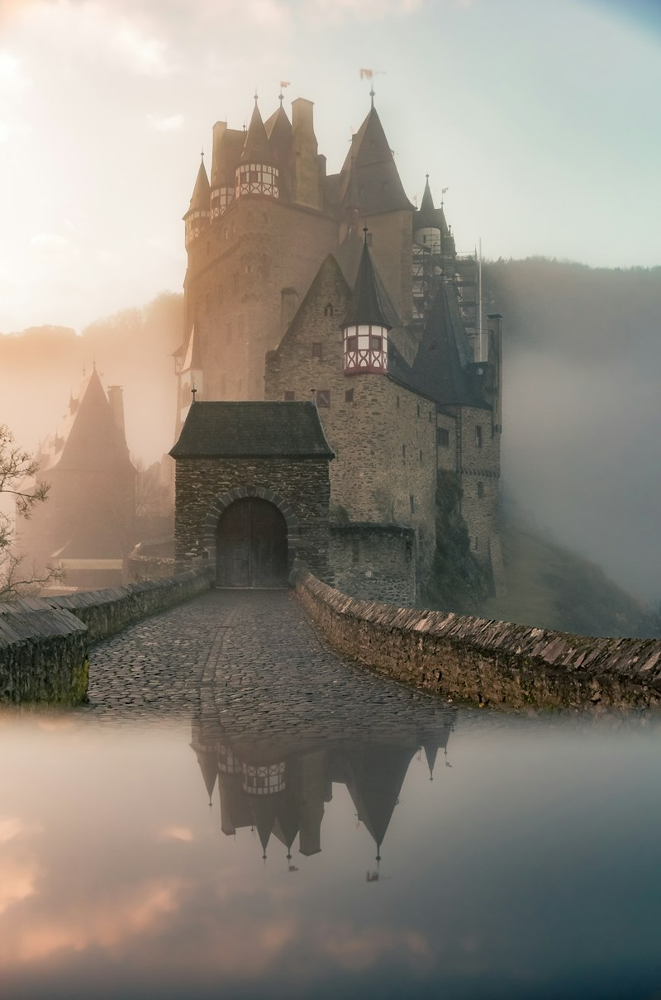

M.Ö. 1. Binyıl – M.S. 4. YüzyılAntik Dönem, Manna & Kafkas Albanyası
Azerbaycan toprakları insanlığın en eski yerleşim alanlarındandır. M.Ö. 1. binyılda Manna ve Medya uygarlıklarıyla başlayan devletleşme süreci, M.Ö. 4. yüzyılda Atropatena ve Kafkas Albanyası ile kurumsallaşmıştır. "Azerbaycan" adının kökeni de Atropatena hükümdarı Atropat'tan ve eski dilde "Ateşin Koruyucusu" anlamından gelmektedir.